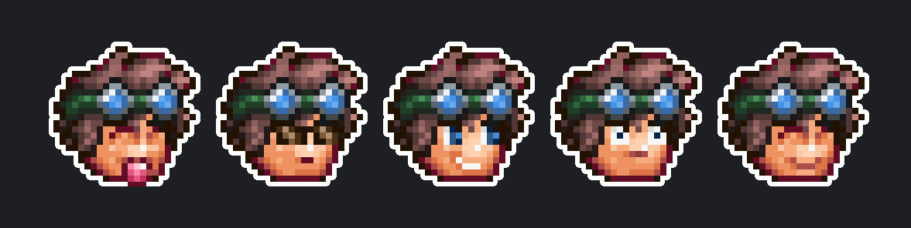
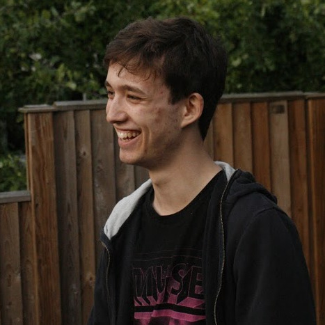

Studying Computer Science (Digital & Technology Solutions) at the University of Leeds, with an general interest interest in
Game Design, Cybersecurity and Robotics.
Terraria Enthusiast, Community Moderator and Beta Tester. World Standard Vex Robotics Competitor and National Champion. Head official Yogscast Angor administrator.
C# ● JS ● Python ● HTML ● CSS ● Unity ● XNA ● WinForms ● Electron ● Node.js ● jQuery ● PyQt ● MySql ● SQLite ● GitHub/GitLab ● JIRA ● Trello
Click here to view the amazing art created for me (mostly) by the Terraria Community.


Sam Poirier ~ darthmorf
about me
Projects
- Super Terraria World
-
Developer for Super Terraria World, an MMORPG mod for the game Terraria. STW acts as a fully fledged total conversion mod, and plays very differently to the base game, implementing new items, new bosses, new npcs, quests, static worlds to explore and much more! You can support STW on Patreon.
- Terraria Logo Maker
-
A web-based (pure HTML5 & js) app that allows you to create your own Terraria themed logos.
The app itself! Terraria Forums Thread. Github Repo. (Old Version).
- Emoticon Creator
-
A web-based (pure HTML5 & js) app that allows you to create your own emoticons, themed after the Terraria Community Forums emotes. Assets by Jestex, inspired by a desktop app by VOT.
The web app. Terraria Forums Thread. Github Repo.
- Terraria Community Team
-
Administrator and Lead Developer for the Terraria Community Team, a group dedicated to working with the community on game related projects. My work mainly involves managing a team of over 3.5 thousand members and developing custom discord bots using the C# discord.net API for both TCT and the main server.
The bots range from simple shops and admin tools to large scale minigames with hundreds of thousands of users.
Discord Server.
- Photon
-
A basic IM client written in Python. It's not intended for actual use and is more of a proof of concept; a way to get some experience with PyQt, and a simultaneously a piece of A Level Coursework.
Github Repo.